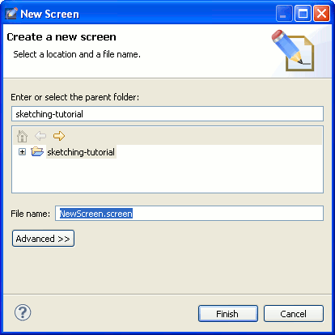

Ensure that you have at least one project in the workspace. To create one use File > New > Project. Then create a new screen by selecting File > New > Screen:

Another way to create a new screen is to clone an existing one. To do this, right-click on the screen file in Project Explorer and choose Clone Screen…. When cloning a screen you are given the option to use a component instead of copying the contents of the cloned screen. This option allows to quickly create derived screens that are automatically updated when the original screen changes.
Next: Adding Widgets